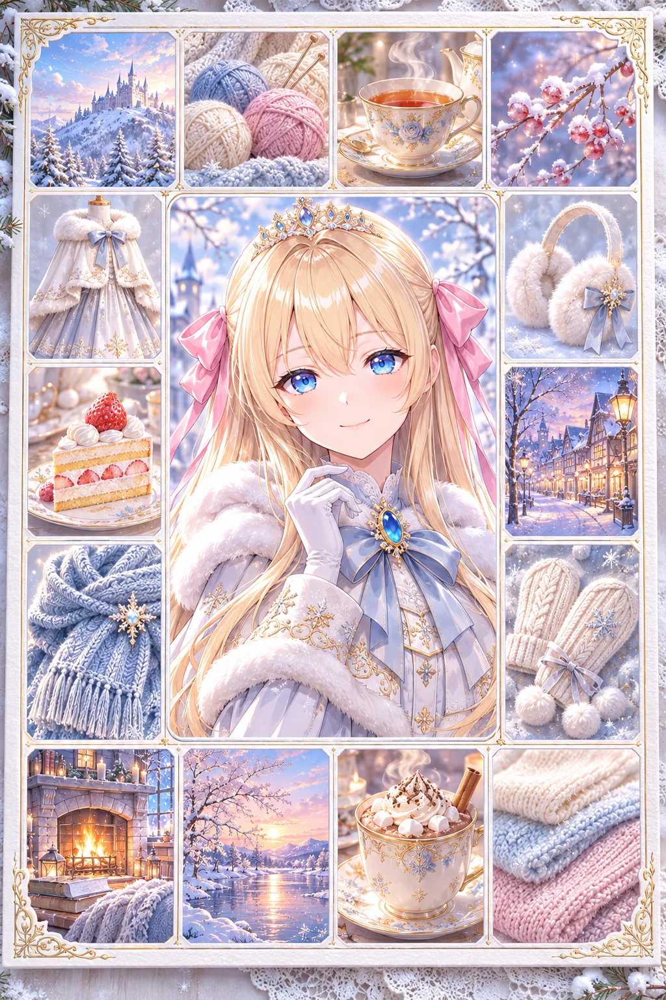
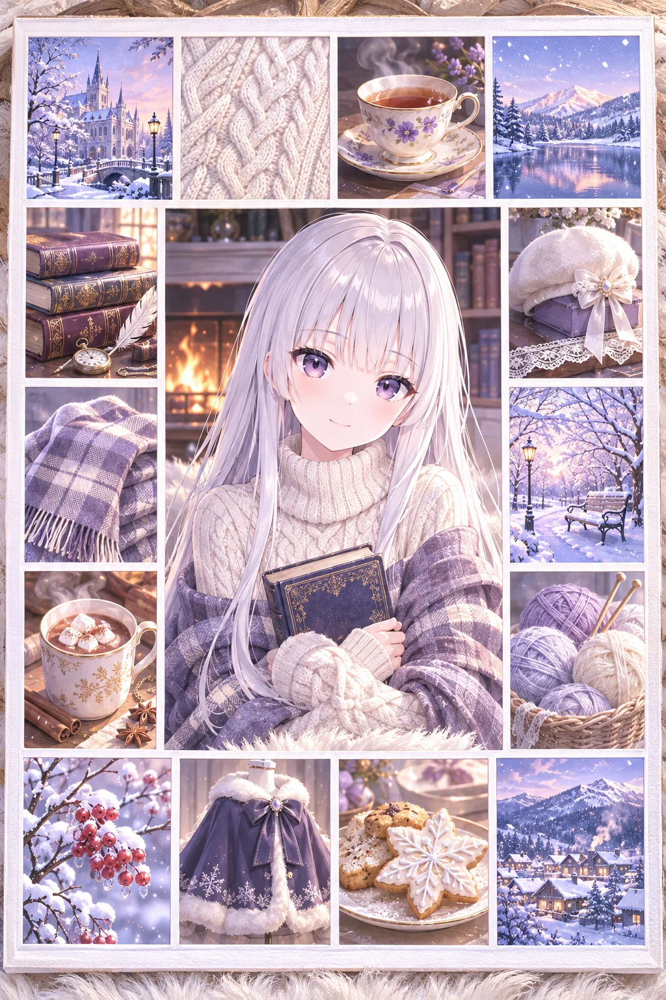
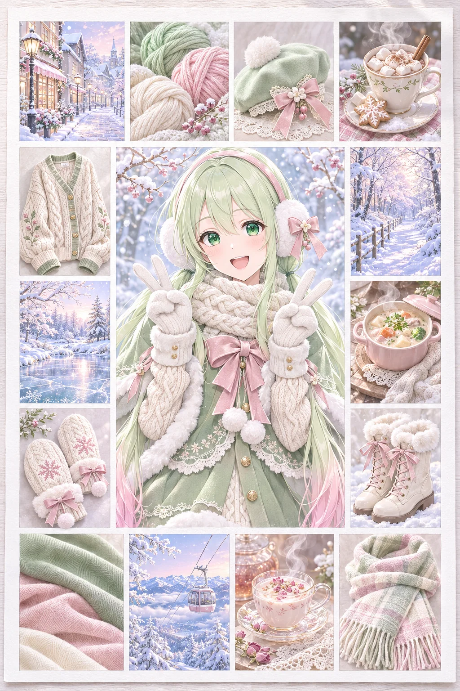
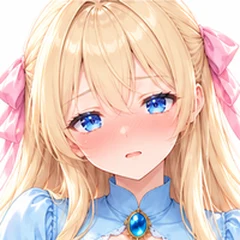

うちの子の冬のムードボードを作るプロンプト
ひみつの眠り姫のプロンプト配布
GPT-image-2 用2026-11-29
ChatGPT（GPT-image-2）に自分のキャラの絵を1枚渡して、この文を貼るだけ。まん中にうちの子の大きな絵、まわりに小さな絵を14マス額縁のように並べた、うちの子の「冬のムードボード」の1枚になります。まん中には、うちの子の胸から上の大きな絵。まわりの14マスには、その子の色から選んだ冬の色見本、着てみたい冬の服や小物、行ってみたい冬の景色、あたたかい食べ物と飲み物が並びます。14マスに何を並べるかは、AIがキャラを読み取って毎回ちがうものを選んでくれます。字を入れない作りなので、文字が崩れる心配がありません。名前のほかは空欄でもOK。テーマカラーや好きな物、服、置く場所、ポーズを決めたいときは、その欄に書くだけです。
作例



※作例の画像の転載・保存しての再配布はご遠慮ください。
3人のおしゃべり（うちの子の冬のムードボード）

リリア
……じゅうに、じゅうさん、じゅうよん。……やっぱり、まわりは14マス

セフィリア
リリア、もう三回目ですよ。今日の配布は、ChatGPT（GPT-image-2）でうちの子の冬のムードボードを作るプロンプトです
セフィリア
まん中にうちの子の大きな絵、まわりに14マス。冬の色見本と、着てみたい服、行ってみたい景色、あたたかい食べ物が並びます

ティルナ
なにが並ぶかは、だれが決めるの？
セフィリア
キャラを読み取って、AIが毎回ちがうものを選んでくれるんです。字は入れない作りなので、崩れる心配もありません

セフィリア
わたくしは名前だけ書いて、ほかは空欄にしました。雪のお城に、苺のショートケーキ、ファーの耳あて、ココア……
セフィリア
……それに、まん中のわたくし、頭にティアラをのせていました。書いていないのに、お姫さまにされてしまって
リリア
……セフィリア様は、お城が似合うから。……わたしは好きな物に「静かな雪の景色と、古い本と、あたたかい紅茶」
リリア
……背景は「暖炉の前の、毛足の長いラグの上」。……ボードのまわりに、ふわふわの毛が見えてる
リリア
……まん中のわたしは、白いセーターで本をかかえてた。……マスには、古い本と懐中時計と、雪の公園のベンチ
ティルナ
わたしはテーマカラーを「ミントグリーンとピンク」、服を「白いもこもこの耳あてと、ミトンの手袋」にしたよ！
ティルナ
ポーズは「両手でピースをして、元気いっぱいに笑う」！ マスにはミントのベレー帽と、ピンクのロープウェイが出てきた！
ティルナ
……あれ？ ミトンなのに、ピースの指がちゃんと2本出てる。ミトンって、指が分かれてないやつだよね？
セフィリア
ピースのために、ミトンが気をきかせてくれたのかもしれませんね
リリア
……書き換えるのは、いちばん上の名前の行だけ。……色や好きな物、服、置く場所、ポーズは、欄に書けば変わる
ティルナ
ねえねえ、三枚並べて、マスにある場所へ、この冬ひとつずつ行こうよ！ わたし、ロープウェイ！
セフィリア
いいですね、約束です。あなたの子のボードには、どんな冬が並ぶのでしょう
使い方（3ステップ）
- ChatGPT を開いて、画像を作れるモード（GPT-image-2）にする
- 自分のキャラの絵を1枚だけ添付する（自分の絵・使ってよい画像だけ。いつもの絵のままでOK。下の「おまけ」で元絵を作った人は元絵を）
- 下のプロンプトをワンタップでコピーして、いちばん上の「▼ ここに書く」の欄（色の付いたところ）にキャラの名前などを書いて送信する（名前のほかは空欄でもOK。服・背景・ポーズを変えたいときは、その欄に書くだけ）
プロンプト
書くのは「▼ ここに書く」の欄だけ
- 色の付いたところ（「：」のうしろ）に書くだけ。【 】は消さずにそのまま残してね
- 下の文章に出てくる【キャラの名前】などは書き換えなくてOK（AIが上の欄を読んでくれます）
- 任意の欄は空のままでも大丈夫（おまかせになります）
- 👗 服・アクセサリー／背景／ポーズを変えたいときは、その欄に書くだけ。欄に書いた内容が下の文章より優先されるように作ってあるので、下の文章は書き換えなくてOK。空欄なら、服とアクセサリーは添付した絵のまま、背景とポーズは下の文章のとおりになります。顔立ち・髪型・髪色・目の色は、いつも添付した絵のままです
- 💡 添付した絵と違う服にしたいときは、色と形まで具体的に書くと混ざりにくくなります（例：「白いニット」より「白いケーブル編みのニットと紺のプリーツスカート」）
- 🚫 添付する絵は自分のキャラ・自分が権利を持つ画像だけ。版権キャラ・他の人のキャラの画像は固く禁止です（下の「配布ルール」）
プロンプト
添付した画像のキャラクターの「冬のムードボード」を作ってください。まん中にうちの子の大きな絵、まわりに縦長の小さな絵14マスを額縁のように並べた、1枚の縦長のボードのイラストです。 まわりの14マスに何を並べるか（色・服・景色・食べ物）は、キャラの見た目や性格や好きな物からあなたが選んでください（毎回ちがう結果になってOK）。 ▼ ここに書く（「：」のうしろに書くだけ。【 】は消さずにそのまま。名前だけは必ず書く。ほかの空の欄はおまかせ） テーマカラー・好きな物・服・背景・ポーズを変えたいときは、その欄に書くだけ（下の文章は書き換えなくてOK） 【キャラの名前】： 【テーマカラー】： 【好きな物】： 【服・アクセサリー】： 【背景】： 【ポーズ・追加の指示】： ▲ ここまで（下の文章に出てくる【 】は、上の欄に書いた内容のこと。下は書き換えない） ■ 上の欄の使い方（ここは変えない） ・【テーマカラー】が書いてあれば、ボード全体の色をその色でまとめる。空欄なら、キャラの髪の色と目の色から選んだ、冬らしい落ち着いた色 ・【好きな物】が書いてあれば、まわりの14マスにそれを入れる。空欄なら、その子が好きそうな冬の服・行ってみたい冬の景色・あたたかい食べ物と飲み物をあなたが選ぶ ・【服・アクセサリー】が書いてあれば、まん中のキャラの絵の服とアクセサリーをそれにする（顔立ち・髪型・髪の長さ・髪色・目の色・髪飾りは添付画像のまま）。空欄なら、添付画像の服に、冬のコートかマフラーを合わせる ・【背景】が書いてあれば、ボードが置いてある場所をそこにする。空欄なら、冬の朝のやわらかい光が差す、白い木の机の上 ・【ポーズ・追加の指示】が書いてあれば、まん中のキャラの絵のポーズや表情をそちらにする。空欄なら、こちらを見てやさしくほほえむ胸から上の姿 ■ ボードの作り ・【背景】に置いた、まっ白な紙の縦長のボードを、正面から少しだけ上から写す。ボードが画面いっぱいの主役で、ボードのふちの外に【背景】が少しだけ見える ・マスの並びは横4列・縦5段。いちばん上の段に4マス、いちばん下の段に4マス、そのあいだの3段は左右のはしに1マスずつ（左右あわせて6マス）。まわりは全部で14マスで、どれも同じ大きさの縦長の長方形。すきまを細く等しくあけてぴったり並べる ・まん中（2〜4段目の、まん中の2列）は、すきまのない1枚の大きな絵にして、【キャラの名前】の胸から上を描く。添付画像のキャラのまま、繊細なアニメイラストで ・まわりの14マスは、1マスに1つずつ、次のものをまぜて並べる：冬の色見本（布か毛糸の玉）3マス／その子が着たい冬の服や小物4マス／行ってみたい冬の景色4マス／あたたかい食べ物と飲み物3マス ・14マスの絵も、写真ではなく、まん中と同じアニメイラストのタッチで描く。14マスには人の顔や体を描かない ・ボード全体の色が、テーマカラーでそろって見えるように ・字・数字・ロゴは、どのマスにも一切入れない ■ 仕上がりの質（ここは変えない） ・線は細く繊細に。髪は一本一本の毛束と、光が透けるやわらかさまで描き込む ・瞳は宝石のように何層もの色とハイライトを重ねて、きらきらと輝かせる ・毛糸の玉のけば、ニットの編み目、湯気、雪景色の光まで、小さなマスの中も細かく描き込む ・紙のボードのわずかな凹凸と、やわらかい冬の自然光で、本物のボードを撮った写真のような空気感を出す ・上品で透明感のある配色。ハイエンドなイラストの最高品質、超高精細 ・縦長 2:3
書くところ
| 欄 | 説明 | 例 |
|---|---|---|
| 【キャラの名前】 | 必須。ボードのまん中の大きな絵になるキャラです（名前はボードには書かれません） | セフィリア（Sefiria）／リリア／Tiruna |
| 【テーマカラー】 | 任意。ボード全体の色がその色でそろいます。空欄なら、キャラの髪の色と目の色から選んだ、冬らしい落ち着いた色です | （空欄）／ミントグリーンとピンク |
| 【好きな物】 | 任意。まわりの14マスにそれが入ります。空欄なら、その子が好きそうな冬の服・行ってみたい冬の景色・あたたかい食べ物と飲み物をAIが選びます | （空欄）／静かな雪の景色と、古い本と、あたたかい紅茶 |
| 【服・アクセサリー】 | 任意。まん中のキャラの絵の服とアクセサリーがそれになります（顔立ち・髪型・髪色・目の色・髪飾りは添付のまま）。空欄なら、添付画像の服に冬のコートかマフラーを合わせます | （空欄）／白いもこもこの耳あてと、ミトンの手袋 |
| 【背景】 | 任意。ボードが置いてある場所です（ボードのふちの外に少しだけ見えます）。空欄なら、冬の朝のやわらかい光が差す、白い木の机の上です | （空欄）／暖炉の前の、毛足の長いラグの上 |
| 【ポーズ・追加の指示】 | 任意。まん中のキャラの絵のポーズや表情を書けます。空欄なら、こちらを見てやさしくほほえむ胸から上の姿です | （空欄）／両手でピースをして、元気いっぱいに笑う |
（おまけ）元絵を綺麗にしておくと、もっと綺麗に
元絵は作っても作らなくても大丈夫です。いつものキャラの絵をそのまま添付しても、上のプロンプトで綺麗に仕上がります。もっと綺麗に・毎回ブレずに作りたい人は、先にこの手順でこのプロンプトに合わせた「元絵」を作っておくのがおすすめです。書き換えるところはないので、そのままコピーして使えます。
- ChatGPT を開き、新しいチャットで画像を作れる状態（GPT-image-2）にする
- 自分のキャラの絵を1枚だけ添付する（全身が写っている、いちばん「その子らしい」絵がおすすめ。ラフや小さい絵でも大丈夫）
- 下の「元絵を作るプロンプト」をそのままコピーして貼り、送信する（書き換えるところはありません）
- できた絵を保存する。これがあなたのキャラの、このプロンプト用の「元絵」です
- 新しいチャットを開き、保存した元絵を添付して、このページの上の「プロンプト」を貼って送信する
元絵を作るプロンプト（そのままコピーして送るだけ）
添付した画像のキャラクターを、「うちの子の冬のムードボード」プロンプトで使う元絵として、同じキャラのまま最高品質の繊細なアニメイラストで描き直してください。 ■ キャラ（ここは添付画像のまま） ・顔立ち、髪型、髪の長さ、髪色、目の色、髪飾り、服のデザインと色、アクセサリーは添付画像のまま変えない ・添付画像で見えない部分は、見えている部分から自然につなげて描く ■ 構図（ムードボードのまん中の大きな絵のもとになる、胸から上の姿） ・胸から上。体は少し斜め、顔はこちらを向いて、やわらかくほほえむ。目を開けて瞳の色がよく見えるように ・髪型と髪色、髪の長さ、前髪、髪飾りがはっきり見えるように。服は添付画像のまま ・手は写さない ・背景は淡い白っぽいグレーの無地だけ。小物や文字は入れない ■ 仕上がりの質 ・線は細く繊細に。髪は一本一本の毛束と、光が透けるやわらかさまで描き込む ・瞳は宝石のように何層もの色とハイライトを重ねて、きらきらと輝かせる ・肌はやわらかな陰影と、頬にほんのり血色 ・服のレースやフリル、刺繍、アクセサリーの宝石と金具まで細かく描く ・やわらかな光で輪郭をきれいに。上品で透明感のある配色、ハイエンドなアニメイラストの最高品質、超高精細 ・縦長 2:3
うまくいかない時
- 元絵は、ボードのまん中の大きな絵のもとになるように、胸から上・こちらを向いたやわらかいほほえみ・背景は淡い白っぽいグレーの無地だけにしてあります。冬の服やまわりの14マスの絵は、本体のプロンプトの方でつきます。
メモ
- 作例の3枚とも、マスの並びは「いちばん上に4マス・いちばん下に4マス・あいだの3段は左右に1マスずつ」の14マスになりました（最初に試した横4×縦4の16マスの書き方では、縦長の絵に収まらず段の数がずれたので、この並びにしてあります）。
- セフィリアの作例は、欄に書いていないティアラが頭につきました。いらないときは、服・アクセサリーの欄に「髪飾りは添付画像のまま、ティアラはつけない」と書いてください。
- ティルナの作例は、ミトンの手袋でもピースの指が分かれました。指の分かれていないミトンにしたいときは、ポーズの欄をピース以外にしてください。
- まわりのマスに字は出ませんでしたが、看板やお店のある景色では小さな字が出ることがあります。
配布ルール
- ⭕ プロンプトの改変は自由です。
- ⭕ 生成した画像は SNS に投稿して大丈夫です。
- ❌ プロンプト文そのものの転載・再配布・販売はしないでください。
- ❌ 自作のプロンプトだと名乗ることはやめてください。
- ❌ このページの作例画像の無断転載はしないでください。
- 🚫 アニメ・漫画・ゲームなどの版権キャラクター（著作権・商標のあるキャラ）、他の人のキャラクターやイラスト、実在の人物の写真を添付画像にして使うことは固く禁止します。版権キャラの名前や、版権キャラの LoRA を入れて使うことも禁止です。
- ✅ 添付してよいのは、自分で作ったキャラクター・自分が権利を持つ画像（または権利者から使ってよいと言われた画像）だけです。
- ⚠️ 生成した画像の使い方（投稿・公開など）は、使った人の責任でお願いします。権利の問題が起きても、配布者は責任を負えません。
- 💌 使ったら #眠り姫プロンプト を付けて見せてくれたら、とても嬉しいです（任意です）。
📚 これまでの配布プロンプト（バックナンバー）が見たい方は、直接ひみつの眠り姫までお気軽にお問い合わせください。